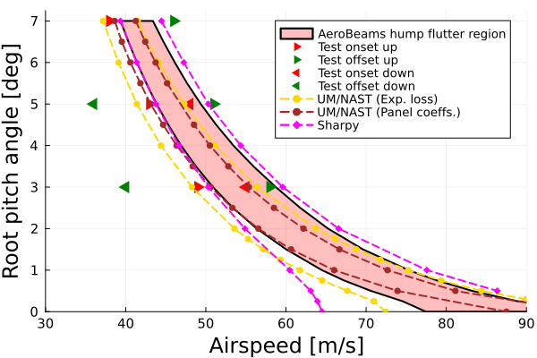
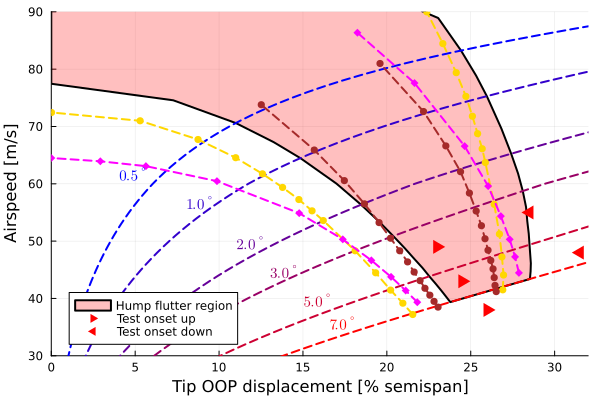

Flutter analysis of the Pazy wing
This example illustrates how to set up a flutter (eigen) analysis, using the Technion's Pazy wing benchmark. The sectional properties of the wing's spar and the aerodynamic tip loss function were defined by Riso and Cesnik. The data is publicly available at https://github.com/UM-A2SRL/AePW3-LDWG.

Pazy wing in the wind tunnel by Avin et al.
Problem setup
Let's begin by setting the variables of our problem. In this example we will analyze the flutter onset and offset boundaries of the clamped wing under several root pitch angles, defined by the array θRange.
using AeroBeams, LinearInterpolations
# Aerodynamic solver
aeroSolver = Indicial()
# Derivation method
derivationMethod = AD()
# Airfoil section
airfoil = deepcopy(flatPlate)
# Flag for upright position
upright = true
# Fixed geometrical and discretization properties
nElem,L,chord,normSparPos = geometrical_properties_Pazy()
# Set system solver options
σ0 = 0.5
σstep = 0.5
NR = create_NewtonRaphson(initialLoadFactor=σ0,maximumLoadFactorStep=σstep)
# Number of vibration modes
nModes = 5
# Set pitch angle and airspeed ranges
θRange = [vcat(-0.25:0.25:1)...,1.5,2,3,4,5,6,7]
URange = collect(0:1:90)
# Initialize outputs
untrackedFreqs = Array{Vector{Float64}}(undef,length(θRange),length(URange))
untrackedDamps = Array{Vector{Float64}}(undef,length(θRange),length(URange))
untrackedEigenvectors = Array{Matrix{ComplexF64}}(undef,length(θRange),length(URange))
freqs = Array{Vector{Float64}}(undef,length(θRange),length(URange))
damps = Array{Vector{Float64}}(undef,length(θRange),length(URange))
tip_OOP = Array{Float64}(undef,length(θRange),length(URange))
flutterOnsetSpeedsOfMode = Array{Vector{Float64}}(undef,length(θRange),nModes)
flutterOnsetFreqsOfMode = Array{Vector{Float64}}(undef,length(θRange),nModes)
flutterOnsetDispOfMode = Array{Vector{Float64}}(undef,length(θRange),nModes)
flutterOffsetSpeedsOfMode = Array{Vector{Float64}}(undef,length(θRange),nModes)
flutterOffsetFreqsOfMode = Array{Vector{Float64}}(undef,length(θRange),nModes)
flutterOffsetDispOfMode = Array{Vector{Float64}}(undef,length(θRange),nModes)Solving the problem
In the following loops, we create new model instances with the combination of pitch angle and airspeed, create and solve the eigenproblem, and then extract the outputs of interest. The model creation process is streamlined with the function create_Pazy, taking the appropriate inputs. Once the solutions for all airspeeds of each root pitch angle are found, we compute the flutter onset and offset speeds (if any), and the respective tip out-of-plane displacement of the wing for each vibration mode.
# Sweep root angle
for (i,θ) in enumerate(θRange)
# Sweep airspeed
for (j,U) in enumerate(URange)
# Model
PazyWingFlutterPitchRange,_ = create_Pazy(aeroSolver=aeroSolver,derivationMethod=derivationMethod,airfoil=airfoil,upright=upright,θ=θ*π/180,airspeed=U)
# Create and solve problem
problem = create_EigenProblem(model=PazyWingFlutterPitchRange,nModes=nModes,systemSolver=NR)
solve!(problem)
# Frequencies, dampings and eigenvectors
untrackedFreqs[i,j] = problem.frequenciesOscillatory
untrackedDamps[i,j] = round_off!(problem.dampingsOscillatory,1e-8)
untrackedEigenvectors[i,j] = problem.eigenvectorsOscillatoryCplx
# Get OOP displacement at midchord
tip_p = problem.nodalStatesOverσ[end][nElem].p_n2_b
R,_ = rotation_tensor_WM(tip_p)
Δ = R*[0; 1; 0]
tip_twist = asind(Δ[3])
tip_OOP[i,j] = -(problem.nodalStatesOverσ[end][nElem].u_n2[1] - chord*(1/2-normSparPos)*sind(tip_twist))
end
# Apply mode tracking
freqs[i,:],damps[i,:],_ = mode_tracking(URange,untrackedFreqs[i,:],untrackedDamps[i,:],untrackedEigenvectors[i,:])
# Separate frequencies and damping ratios by mode
modeFrequencies = Array{Vector{Float64}}(undef,nModes)
modeDampings = Array{Vector{Float64}}(undef,nModes)
modeDampingRatios = Array{Vector{Float64}}(undef,nModes)
for mode in 1:nModes
modeFrequencies[mode] = [freqs[i,j][mode] for j in eachindex(URange)]
modeDampings[mode] = [damps[i,j][mode] for j in eachindex(URange)]
modeDampingRatios[mode] = modeDampings[mode]./modeFrequencies[mode]
end
# Loop over modes: compute flutter onset and offset speeds, respective frequencies and OOP displacements
for mode in 1:nModes
# Find flutter onset indices
onsetIndices = findall((modeDampings[mode][2:end] .> 0) .& (modeDampings[mode][1:end-1] .< 0)) .+ 1
nIndOn = length(onsetIndices)
# Loop flutter onset indices
flutterOnsetSpeeds,flutterOnsetFreqs,flutterOnsetDisp = Vector{Float64}(undef,nIndOn),Vector{Float64}(undef,nIndOn),Vector{Float64}(undef,nIndOn)
for (n,k) in enumerate(onsetIndices)
flutterOnsetSpeeds[n] = interpolate(modeDampings[mode][k-1:k],URange[k-1:k],0)
flutterOnsetFreqs[n] = interpolate(modeDampings[mode][k-1:k],modeFrequencies[mode][k-1:k],0)
flutterOnsetDisp[n] = interpolate(modeDampings[mode][k-1:k],tip_OOP[i,k-1:k]/L*100,0)
end
if nIndOn == 0
flutterOnsetSpeeds,flutterOnsetFreqs,flutterOnsetDisp = [NaN],[NaN],[NaN]
end
# Set flutter onset variables for current mode
flutterOnsetSpeedsOfMode[i,mode] = flutterOnsetSpeeds
flutterOnsetFreqsOfMode[i,mode] = flutterOnsetFreqs
flutterOnsetDispOfMode[i,mode] = flutterOnsetDisp
# Find flutter offset indices
offsetIndices = findall((modeDampings[mode][2:end] .< 0) .& (modeDampings[mode][1:end-1] .> 0)) .+ 1
nIndOff = length(offsetIndices)
# Find flutter offset variables
flutterOffsetSpeeds,flutterOffsetFreqs,flutterOffsetDisp = Vector{Float64}(undef,nIndOff),Vector{Float64}(undef,nIndOff),Vector{Float64}(undef,nIndOff)
# Loop flutter offset indices
for (n,k) in enumerate(offsetIndices)
flutterOffsetSpeeds[n] = interpolate(-modeDampings[mode][k-1:k],URange[k-1:k],0)
flutterOffsetFreqs[n] = interpolate(-modeDampings[mode][k-1:k],modeFrequencies[mode][k-1:k],0)
flutterOffsetDisp[n] = interpolate(-modeDampings[mode][k-1:k],tip_OOP[i,k-1:k]/L*100,0)
end
if nIndOff == 0
flutterOffsetSpeeds,flutterOffsetFreqs,flutterOffsetDisp = [NaN],[NaN],[NaN]
end
# Set flutter offset variables for current mode
flutterOffsetSpeedsOfMode[i,mode] = flutterOffsetSpeeds
flutterOffsetFreqsOfMode[i,mode] = flutterOffsetFreqs
flutterOffsetDispOfMode[i,mode] = flutterOffsetDisp
end
endPost-processing
Post-processing begins by loading the reference experimental data by Drachinski et al..
# Load reference data
rootPitchVelUp = [3; 5; 7]
rootPitchVelDown = [3; 5]
flutterOnsetVelUp = [49; 43; 38]
flutterOffsetVelUp = [58; 51; 46]
flutterOnsetVelDown = [55; 48]
flutterOffsetVelDown = [40; 36]
flutterOnsetDispUp = [23; 24.5; 26]
flutterOnsetDispDown = [28.5; 31.5]The Pazy wing is known from the tests of Drachinski et al. to have a hump flutter mode, that is, a mode that becomes unstable over a certain region of airspeeds. The size of this region is dependent on the root pitch angle of the wing. Let us now plot the flutter boundaries of this hump mode. There is good agreement with the experimental data, but notice that to capture the hysterysis on the flutter onset and offset we would need an analysis more complex than an eigenvalue one.
using Plots
gr()
# Flutter onset and offset speeds vs root pitch angle
mode2plot = 3
x1 = [flutterOnsetSpeedsOfMode[i,mode2plot][1] for i in eachindex(θRange)]
x2 = [flutterOffsetSpeedsOfMode[i,mode2plot][1] for i in eachindex(θRange)]
plt1 = plot(xlabel="Airspeed [m/s]", ylabel="Root pitch angle [deg]", xlims=[0,90], ylims=[0,7.25], xticks=collect(0:15:90), yticks=collect(0:1:7), legend=:bottomleft)
plot!(Shape(vcat(x1,reverse(x2[3:end]),97,100),vcat(θRange,reverse(θRange))), fillcolor = plot_color(:red, 0.25), lw=2, label="AeroBeams flutter region")
scatter!(flutterOnsetVelUp, rootPitchVelUp, shape=:rtriangle, mc=:red, ms=10, msw=0, label="Test onset up")
scatter!(flutterOffsetVelUp, rootPitchVelUp, shape=:rtriangle, mc=:green, ms=10, msw=0, label="Test offset up")
scatter!(flutterOnsetVelDown, rootPitchVelDown, shape=:ltriangle, mc=:red, ms=10, msw=0, label="Test onset down")
scatter!(flutterOffsetVelDown, rootPitchVelDown, shape=:ltriangle, mc=:green, ms=10, msw=0, label="Test offset down")
# Flutter onset and offset speeds vs tip OOP displacement for varying root pitch angle
θ2plot = [0.5,1,2,3,5,7]
indθ2plot = findall(vec(any(θRange .== θ2plot', dims=2)))
x1 = [flutterOnsetDispOfMode[i,mode2plot][1] for i in eachindex(θRange)]
x2 = [flutterOffsetDispOfMode[i,mode2plot][1] for i in eachindex(θRange)]
y1 = [flutterOnsetSpeedsOfMode[i,mode2plot][1] for i in eachindex(θRange)]
y2 = [flutterOffsetSpeedsOfMode[i,mode2plot][1] for i in eachindex(θRange)]
plt2 = plot(xlabel="Tip OOP displacement [% semispan]", ylabel="Airspeed [m/s]", xlims=[0,32], ylims=[30,90], xticks=collect(0:5:30), yticks=collect(30:10:90), legend=:bottomleft)
plot!(Shape(vcat(x1,reverse(x2[3:end]),22,22,0),vcat(y1,reverse(y2[3:end]),97,100,90)), fillcolor = plot_color(:red, 0.25), lw=2, label="AeroBeams flutter region")
for (n,ind) in enumerate(indθ2plot)
θ = θ2plot[n]
plot!(tip_OOP[ind,:]/L*100, URange, c=:black, ls=:dash, lw=2, label=false)
if θ==0.5
xind,yind = 16,79
elseif θ==1
xind,yind = 20,72
elseif θ==2
xind,yind = 22.5,63
elseif θ==3
xind,yind = 24,56
elseif θ==5
xind,yind = 26,49
elseif θ==7
xind,yind = 27,42.5
end
annotate!([xind],[yind], text("$(θ2plot[n]) deg", 10, :bottom))
end
scatter!(flutterOnsetDispUp, flutterOnsetVelUp, shape=:rtriangle, mc=:red, ms=10, msw=0, label="Test onset up")
scatter!(flutterOnsetDispDown, flutterOnsetVelDown, shape=:ltriangle, mc=:red, ms=10, msw=0, label="Test onset down") 
This page was generated using Literate.jl.